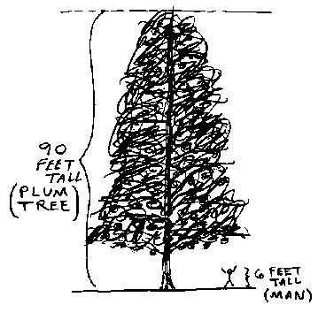
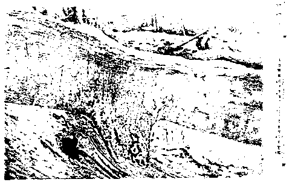

Cretinism or Evilution? No. 3
Edited by E.T. Babinski
Ninety Foot Tall Plum Tree

|
Previous |
Contents |
Next |
A Frozen Ninety Foot Tall Plum Tree
with Ripe Fruit and Green Leaves Found North of the Arctic Circle?
Some young-earth creationists have hypothesized that "before the Flood" the earth was' a "tropical" or "sub-tropical" paradise from pole to pole, but with the coming of the Flood, the world's climate was quickly and drastically altered. One piece of evidence that some creationists have offered in support of this hypothesis are "frozen trees bearing ripe fruit and green leaves found above the arctic circle." Another piece of evidence offered in support are "remains of warm weather hippos found in the tundra's frozen muck." We shall discuss both of these unusual claims in the pieces that follow.
For starters, just try to imagine a plum tree that was 90 feet tall! That's over 70 feet taller than the height given in World Book Encyc. ("plum trees grow from 7 to 18 feet").

Dr. Kent Hovind (a creation evangelist who addresses hundreds of audiences each year, speaks on radio, and is also known for offering $10,000 for "evidence for evolution") has claimed that a 90-foot tall plum tree with green leaves and ripe fruit was found frozen on New Siberian Island over six hundred miles north of the Arctic circle by the Russian arctic explorer, Baron von Toll. Dr. Hovind has repeatedly cited this piece of evidence in his live presentations, radio programs, and in his Creation Seminar videotapes.
Ralph Epperson (a creationist lecturer from Tucson, Arizona, also known as a conspiracy theorist and author of The Unseen Hand: An introduction to the Conspiratorial View of History), has claimed that there are 50-foot tall pear trees with fruit still frozen on their branches at the north pole.
I have been unable to track down the source of Epperson's claim that a multitude of such frozen fruit trees exist at the north pole. However, Dr. Hovind's claim of a single fruit tree sounded relatively more convincing and he was able to tell me that he had read it in Bible-Science News, "about ten years ago." After a diligent search I pinpointed the article, "The Mystery of the Frozen Giants" by Lee Grady [cover story, Bible-Science News, v.23, no.4, April 1985]. On page 2, Mr. Grady stated:
Baron Toll, an Arctic explorer, found the remains of a saber-toothed tiger and a 90-foot plum tree with ripe fruit and green leaves -- over 600 miles north of the Arctic Circle in the New Siberian Islands.
As to the source of this information Mr. Grady cited The Waters Above (Chicago: Moody Press, 1981, p. 316) by the young-earth creationist, Joseph Dillow. I obtained a copy of Mr. Dillow's book and found that Dillow had stated:
Baron Toll, the Arctic explorer, found remains of a saber-toothed tiger and a 90-foot plum tree with green leaves and ripe fruit on its branches over 600 miles north of the Arctic Circle in the New Siberian Islands.
Mr. Dillow cited two sources for this information:
1) The first was, The Mammoth and Mammoth Hunting in North-East Siberia by Bassett Digby, F.R.G.S (London: H.F. & G. Witherby, 1926). Here is what Digby stated (p. 150-51):
Bolshoi Lyakhov is the most southerly of the group [of New Siberian Islands]... It was along the south coast [of that island] that Toll found his extraordinary layers of what he called "fossil ice." They were as much as 70 ft. thick. On the top of them lay the post-Tertiary deposits in which were remains of wooly rhinoceros and mammoth, American stag, reindeer, a horse (apparently the Mongolian wild horse, which still exists), saiga, antelope, ovibos, and sabre-toothed tiger. There was lying among them, too, a 90 ft. alder-tree (Alnus fructicosa), with even its roots and seeds preserved.
Note that the tree spoken of by Digby was not a "plum" tree (Prunus is the name for "plum tree"), but an alder-tree (Alnus is the name for "alder") which is related to the birch family.
2) Mr. Dillow's second source of information was the Transactions of the American Philosophical Society Held at Philadelphia For Promoting Useful Knowledge, New Series, Volume XXII, Part 1, "The Carcasses of the Mammoth and Rhinoceros Found in the Frozen Ground of Siberia," by I.P. Tolmachoff (Philadelphia: The American Philosophical Society, 1929). Tolmachoff agreed with Digby (above) that the tree which Baron von Toll discovered was not a "plum" tree (Prunus) but an alder (Alnus):
Toll...had opportunities of collecting, within the tundra ground, leaves, roots and fine branches of plants like Alnus fruticosa .. which are not to be found there now, but grow in more southern latitudes (p.47)
When Alnus fruticosa was growing on the New Siberian Islands they were connected with the continent which at that time thus had protruded about four degrees farther north as compared with the recent shore line of the mainland. The retreat of the forests might have been caused by the separation of the New Siberian Islands, although the climate, generally speaking can have suffered very little change, if any. (p. 48)
... Alnus fruticosa which in the New Siberian Islands had been discovered first by Toll in the ground of the upper recent tundra, where the latter located, of course, the mammoth-horizon. (p. 54)
Attentive readers may have noticed that Digby stated the name of the tree was Alnus fructicosa, and "fructicosa" is indeed used to describe "fruit-bearing" species. However the use of "fructicosa" is simply an error (or perhaps a misspelling made by the typesetter of Digby's manuscript). Because any check of the list of botanical species shows there is no such species as Alnus "fructicosa." Of course Tolmachoff employed the correct spelling, "fruticosa" (without the "c"), which refers to a "bushy tree" which does not grow to be extremely tall. Baron von Toll in the original report (cited below) also stated that the tree was an Alnus fruticosa, not "fructicosa." So we know for certain that the original description was of a bushy species of alder, and not a fruit-bearing "plum" tree.
Now we come to what Baron von Toll stated in his original report, published in the Memoires de L'Academie imperials des Sciences de St. Petersbouro, VII Serie, Tome XLII, No. 13., Wissenschaftliche Resultate der Von der Kaiserlichen Akademie der Wissenschaften sur Erforschung des Janalandes und der Neusibirischen Inseln in den Jahren 1885 und 1886 Ausgesandten expedition. ["Scientific Results of the Imperial Academy of Sciences of the Investigation of Janaland and the New Siberian Islands from the Expeditions Launched in 1885 and 1886" -- ed.] Abtheilung III: Die fossilen Eislager und ihre Beziehungen su den Mammuthleichen, by Baron Eduard v. Toll (St. Peterabourg: Commissionnaires de I'Academie Imperiale des sciences, 1895). A translation of the relevant passages from Toll's report are printed below:
And the layers from top to bottom as follows:
1. a peat covering composed of water mosses among other things.
2. a frozen, sandy clay layer with Alnus fruticosa, Salix sp., a scapula of Lepus sp. [i.e., a shoulder bone of a saber-toothed tiger -- ed.]
3. similar layers with Pisidium sp. and Valvata sp. The reclining nature of this layer is covered here. In figure 1 these same layers 1 and 2 form the upper horizon, only the deposit of the sea basin with Pisidium and Alvata is missing there.
The surprising thing in this instance is the discovery of Alnus fruticosa which is so wonderfully preserved that the leaves hold fast on the twigs of the boughs -- indeed even whole clusters of blossom casings are preserved. The bark of the twigs and stems is fully intact, all the stems of the Alnus fruticosa along with the roots, in the length of 15-20 feet, jut out of the profile as can be seen in both figures of the table. With a magnifying glass, one can even recognize in figure 2 the blossom casings of the Alnus fructicosa. These findings provide evidence that a vegetation which today reaches its northern limit 4 degrees to the south on the mainland was predominant at that time on the Great Ljachow Island below 74 degrees and that these remnants could not have floated here from afar but grew here at this site. (p. 60 -- translation by Prof. Jerry Cox, Furman University, May 1994)
Notice that the color of the leaves is not referred to in Toll's paper. They were probably brownish, desiccated and shriveled, with at most, traces of greenish color here and there. The original sources are simply silent as to this matter.
A photograph of the alder that Toll discovered is reproduced below (= "figure 2" from Baron v. Toll's original monograph):

Having compared statements in Joseph Dillow's book, The Waters Above (cited in Bible-Science News) with the original sources, we arrive at these conclusions:
1) Contrary to statements made in the two creationist publications (cited above), Baron von Toll did not discover a frozen "plum" tree. He found the remnants of an alder. And speaking of the particular species of alder that Toll discovered, the Great Soviet Encyclopedia had this to say, "Alnus fruticosa .. is found in the Northeast European USSR, in the Urals [an alpine mountain range], in northern regions of Western Siberia, and in Eastern Siberia." [emphasis added -- ed.] [from The Great Soviet Encyclopedia, trans. of the 3rd ed., Moscow, 1977 (New York: MacMillan, 1981), v. 18, P. 6] Furthermore, the black alder (Alnus glutinosa) grows where glaciers are currently retreating in Alaska. So, finding remains of an alder does not constitute evidence of a "tropical" or even a "sub-tropical" climate.
2) Contrary to statements made in the creationist publications, there was no "ripe fruit" on the tree's branches. The only "fruit" of an alder is a single-seeded, winged nutlet, which resembles a tiny cone much like the larger ones found on pine trees. This nutlet also remains on the branches long after the seed has dropped from it.
3) Contrary to statements made in the creationist publications, neither Baron von Toll, nor Digby, nor Tolmachoff, ever stated that the leaves on the tree were "green."
4) Contrary to statements made in the creationist publications (and in Digby's book), there is no mention of the tree being "90 ft." In the original report Baron von Toll stated that "The bark of the twigs and stems is fully intact, all the stems of the Alnus fruticosa along with the roots, in the length of 15-20 feet, jut out of the profile as can be seen in both figures of the table." The sentence is a little difficult to interpret, but Toll seems to be stating that the tree's length, including stems and roots, was "15-20 ft." and that some of the stems and roots were "jutting" out of the ice layer, or, "profile" that they were laying in. This would agree with the fact that the "bushy" species of alder, Alnus fruticosa, is known to grow to be about 19 and a half ft. tall [see the Great Soviet Encyclopedia, under "Alnus (alder)"], not "90 ft." (This leaves open the question where Digby may have obtained the "90 ft." figure. One guess is that he may have added the "70 ft." maximum thickness of all the "fossil ice" layers with the "15-20 ft." figure for the tree that Toll gave. 70 and 20 makes 90! However, in that case, Digby misunderstood what Toll was originally talking about. For instance, Toll did not say that the tree extended through all the "fossil ice" layers, nor did he say that it was standing "upright." Toll says it was found in a "frozen sandy clay layer," i.e., not extending through all the fossil ice layers. So, it was lying horizontally in one specific layer. The photograph further demonstrates that it was lying horizontally since the hand-sized pick axe seen in the upper middle of figure 2 is lying on flat ground next to a horizontally spread out tree. Either way, the fact remains that Toll's original report does not mention "90 ft." in reference to this discovery.)
5) That the alder had roots, twigs, stems, leaves and blossom casings demonstrates that it was not transported in a cataclysmic Flood to the island, but it probably grew there, at a time when the New Siberian Islands were connected to the mainland, which would have extended the forest limit further north [Tolmachoff, p. 47-48].
Alders are most often found beside rivers and springs, either in alpine regions or in northern latitudes. It is possible that the tree originally grew on the edge of a river which increased in flow during a seasonal thaw that loosened the tree's soil and roots. It fell, and was quickly covered with mud, which later froze. For instance, the tree was found in a "frozen, sandy, clay layer." That Toll found only a single tree instead of a forest-full of such specimens, proves that the tree's preservation was a rare and lucky circumstance.
6) What about the bone of the saber-toothed tiger that was found in the same "frozen sandy clay" as the alder? Unfortunately, one bone can tell us little about the climate. As Tolmachoff stated in his paper (P. 71), "[Baron von] Toll ... did not distinguish between primary and secondary localities of fossil mammals in the New Siberian Islands. Our knowledge of different fossil mammals there is very unequal. We have, for example, little doubt that the musk ox was an Arctic animal, like its recent representatives, and that it used to live and die out along with the mammoth and rhinoceros. But we know, for example, very little about the tiger the remnants of which were found in the New Siberian Islands. Was it also an animal well adapted to Arctic conditions, or did it lack such an adaptation, making the change of climate [which Tolmachoff believes took place over a very long period of time - ed.] fatal for it? Did it formerly live in the New Siberian Islands, or were the few bones found brought over there by rivers [i.e., at a time when the island was connected to the mainland -- ED.]?"
In other words, did saber-toothed tigers adapt to a cold climate, developing thicker skin and fur, and follow and feast on migrating herds of other cold-adapted mammals? That's not an unrealistic possibility. The island on which the few saber-toothed tiger bones were found is the southernmost of the New Siberian Islands and geologists contend that it was once part of the mainland. And the climate may at that time have been less severe. Even today that particular island is inhabited by Arctic foxes (which are hunted there), and by northern deer and lemming. And, during the two months of summer that the island enjoys, it is filled with muddy swamps and abundant bird life. [See the Encyclopedia Americana, Encyclopedia Britannica and The Great Soviet Encyclopedia, under "New Siberian Islands," "Liakhov Islands," and, "Bolshoi Lyakhov Island."] And speaking of other large mammalian carnivores adapted to a cold climate, there's the snow leopard, a large whitish cat with dark blotches and long thick fur that inhabits the mountains of Central Asia; and, of course, the polar bear.
In summation, the story that Baron von Toll found a "plum tree with ripe fruit and green leaves," growing six hundred miles north of the arctic circle does not agree with Toll's original statements. The Waters Above, a book by young-earth creationist writer, Joseph Dillow, inaccurately represented data contained in the works of Digby and Tolmachoff. Neither Digby nor Tolmachoff wrote that the tree which Toll found was a "plum tree," bearing "ripe fruit," and having "green leaves." Neither did Dillow check the original source, Baron von Toll's paper. It is hoped that this creationist fable will no longer be repeated by young-earth creationists. Kent Hovind has already admitted to dropping this tale from his repertoire.
E.T. BABINSKI
|
Previous |
Contents |
Next |